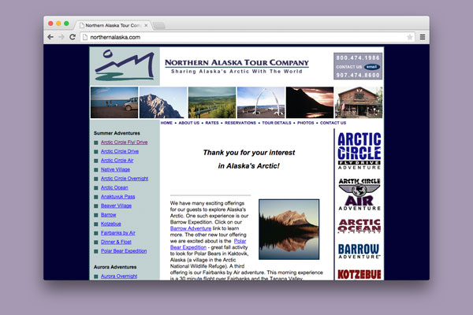
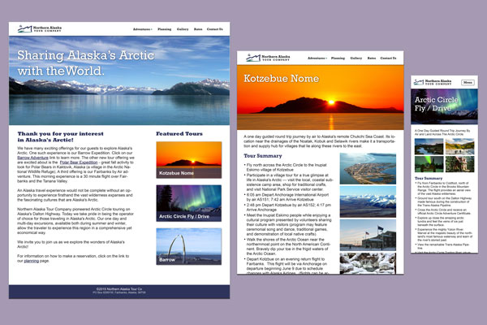
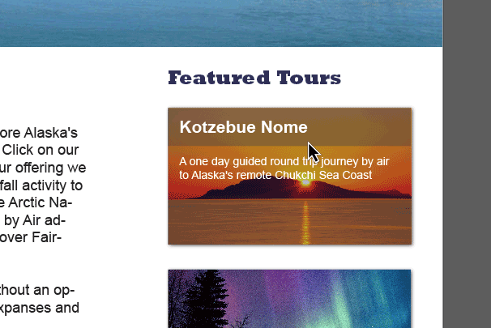

Before
The original site was built using a fixed width table layout, making it horrible for SEO and not adaptable to today's wide variety of devices and screen sizes.

After
The redesign brings the site up to date with current design trends. Multiple breakpoints allow for a great browsing experience on any size screen.
Improved Navigation
The adventure menu now sits on the top nav bar – always available to the user. This frees up valuable horizontal space for a more pleasing layout and gives the site on the whole a more modern feel.

Subtle Interactions
Using CSS3, interactions like info-revealing rollovers and subtle link transitions are created. They add a level of polish and elegance for newer browsers, but don't detract from the experience on those less capable.